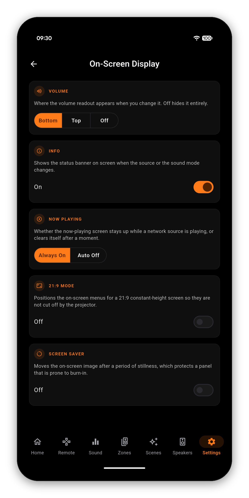

The volume number that flashes up mid-film, the banner when the source changes, the now-playing screen that stays up over music - all of it lives in the receiver's setup menu, which means getting up and putting the menu on the screen you were watching. AVR Maestro puts it on your phone instead.

Not every receiver has all five. Rather than showing a control that would fail, AVR Maestro asks the chassis which on-screen options it publishes and renders only those - so an older receiver with no Screen Saver simply does not get that card.
If a setting exists but the receiver did not answer this time, the app says exactly that and offers to try again. It never presents "we could not read this" as "your receiver does not have it" - those are different answers and only one of them is true.